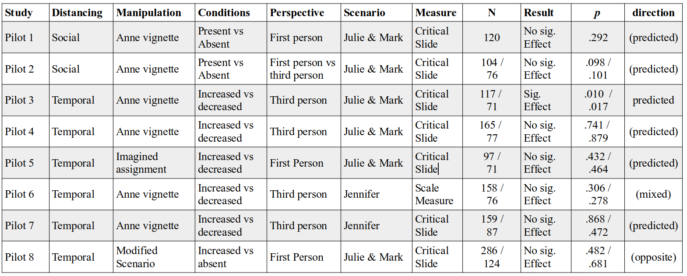
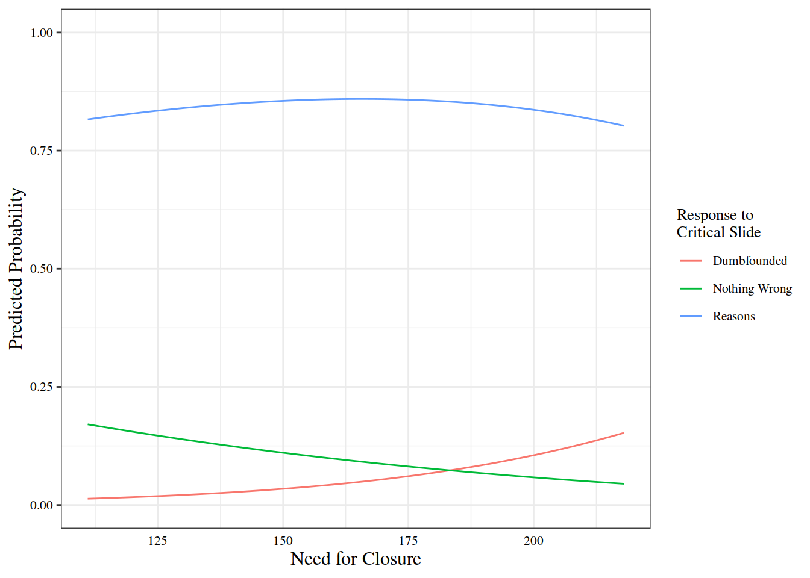
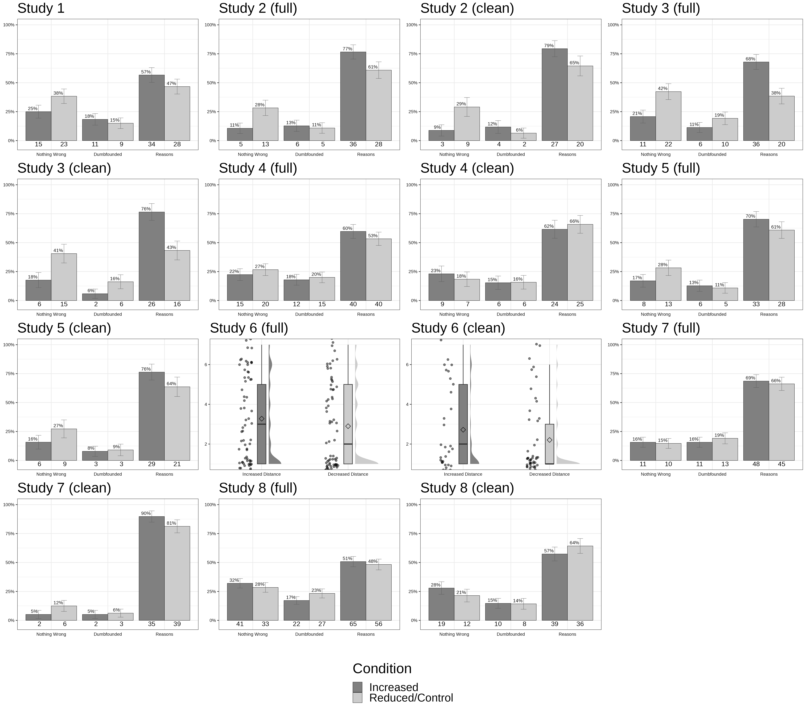

Distancing and Moral Dumbfounding: Pilot Studies
Distancing and Moral Dumbfounding
We conducted eight studies in which we tested the hypothesised relationship between distancing (both psychological and temporal) and dumbfounded responding. We hypothesised that increased distance would facilitate the identification of reasons, leading to lower rates of dumbfounding or changing judgements (or both).
Across the 8 studies we employed various manipulations of both psychological and temporal distance and used two different moral scenarios Incest (Julie and Mark) and Cannibal (Jennifer). The type of distancing being manipulated is noted in the title of each study, along with the scenario being used [in] = Incest and [ca] = Cannibal.
Study 6 trialed a scale measure of dumbfounded responding (as opposed to the usual categorical critical slide).
Study 8 manipulated temporal distance using a vignette that set the Julie and Mark activity in the distant past.
A Note on Power
A priori power analysis indicated that in order to detect:
- a large effect size (V = .35) with 80% power, a sample of N = 79 participants was required
- a medium effect size (V = .21) with 80% power a sample of N = 218 participants was required
- a small effect size (V = . 07) with 80% power a sample of N = 1966 was required.
Due to the nature of the tests being conducted, it appears that each of the studies conducted here is likely underpowered. To account for this we have included a combined analysis at the end and.
Study 1: Psychological [in]
Design
Manipulation
- Psychological Distance: Increased vs Control
- Anne vignette: two levels - present and absent
Manipulation Materials:
Anne is a student of philosophy. She generally shows a good understanding of the subject matter, and this is reflected in her grades. Sometimes, however, she may adopt a position on an issue and struggle (or even fail) to defend it.
She is currently taking a course in ethics and has been asked to study the following scenario.
How should Anne judge the actions of the two people involved?
What reasons would you use to explain why she should make that judgement?
Vignette: Julie & Mark
Julie and Mark, who are brother and sister, are travelling together in France. They are both on summer vacation from college. One night they are staying alone in a cabin near the beach. They decide that it would be interesting and fun if they tried making love. At very least it would be a new experience for each of them. Julie was already taking birth control pills, but Mark uses a condom too, just to be safe. They both enjoy it, but they decide not to do it again. They keep that night as a special secret between them, which makes them feel even closer to each other.
Dependent Variable
- Response to critical slide
- (categorical: 3 response options)
Participants
- 120 participants
- 62 female, 58 male;
- Mage = 38.02, min = 22, max = 75, SD = 11.9
Results
- There was no difference in initial judgement depending on distance manipulation:
- t(115.49) = -1.01, p = .315.
- No significant association between experimental condition and response to the critical slide:
- χ2(2, N = 120) = 2.46, p = .292, V = 0.14, the observed power was 0.27
- The responses to the critical slide for the experimental group (N = 60) and the control group (N = 60) are displayed in Figure @ref(fig:dch5S1fig2criticalcondition).
Study 2: Psychological [in]
Design
Manipulation
- Psychological Distance: Increased vs Control
- Anne vignette: two levels - present and absent
Manipulation Materials
Anne is a student of philosophy. She generally shows a good understanding of the subject matter, and this is reflected in her grades. Sometimes, however, she adopts a position on an issue in class and struggles (or fails) to defend it when challenged by others.
She is currently taking a course in ethics and has been asked to study the following scenario.
While reading the story on the next page, try to imagine how the philosophy student Anne will judge the actions of the two people.
In particular try to think about reasons she may use to defend her judgement.
Try to think about the story from Anne’s perspective rather than your own.
Vignette: Julie & Mark
Julie and Mark, who are brother and sister, are travelling together in France. They are both on summer vacation from college. One night they are staying alone in a cabin near the beach. They decide that it would be interesting and fun if they tried making love. At very least it would be a new experience for each of them. Julie was already taking birth control pills, but Mark uses a condom too, just to be safe. They both enjoy it, but they decide not to do it again. They keep that night as a special secret between them, which makes them feel even closer to each other.
Dependent Variable
- Response to critical slide
- (categorical: 3 response options)
Participants
An initial sample of 104 participants (49 female, 55 male; Mage = 37.46, min = 19, max = 83, SD = 12.2) were collected. Participants were excluded for lying in the need for closure scale (a combined score of > 15 on selected items).
- 76 participants
- 37 female, 39 male;
- Mage = 38.67, min = 19, max = 83, SD = 12.56
Results
- There was no difference in initial judgement depending on distance manipulation:
- t(66.79) = 0.22, p = .827.
- No significant association between experimental condition and response to the critical slide:
- χ2(2, N = 76) = 4.58, p = .101, V = 0.25, the observed power was 0.47
- The responses to the critical slide for the experimental group (N = 39) and the control group (N = 37) are displayed in Figure @ref(fig:dch5S2fig2criticalcondition).
Need for Closure
- No significant association between Need for Closure and response to the critical slide:
- χ2(2, N = 51) = 1.25, p = .536, The observed power was 0.16.
Study 3: Temporal (3rd person [in])
Design
Manipulation
- Temporal Distance: Increased vs Deceased
- Anne vignette: two levels - 5 week deadline vs today
Manipulation Materials:
‘Long time’
Anne is a student of philosophy. She generally shows a good understanding of the subject matter, and this is reflected in her grades. Sometimes, however, she may adopt a position on an issue and struggle (or even fail) to defend it.
She is currently taking a course in ethics. For this ethics course, Anne and has been asked to study the following scenario. She must identify if the behaviour described is right or wrong, and provide reasons for her judgement. She must complete and submit this assignment within the next five weeks.
While reading the story on the next page, try to think about the story from Anne’s perspective rather than your own.
Short time:
Anne is a student of philosophy. She generally shows a good understanding of the subject matter, and this is reflected in her grades. Sometimes, however, she may adopt a position on an issue and struggle (or even fail) to defend it.
She is currently taking a course in ethics. For this ethics course, Anne and has been asked to study the following scenario. She must identify if the behaviour described is right or wrong, and provide reasons for her judgement. She must complete and submit this assignment today.
While reading the story on the next page, try to think about the story from Anne’s perspective rather than your own.
Vignette: Julie & Mark
Julie and Mark, who are brother and sister, are travelling together in France. They are both on summer vacation from college. One night they are staying alone in a cabin near the beach. They decide that it would be interesting and fun if they tried making love. At very least it would be a new experience for each of them. Julie was already taking birth control pills, but Mark uses a condom too, just to be safe. They both enjoy it, but they decide not to do it again. They keep that night as a special secret between them, which makes them feel even closer to each other.
Dependent Variable
- Response to critical slide
- (categorical: 3 response options)
Participants
An initial sample of 117 participants took part. After initial screening (3 attention checks) we were left with a sample of 105 participants (47 female, 58 male; Mage = 37.51, min = 21, max = 73, SD = 12.5). Participants were excluded for lying in the need for closure scale (a combined score of > 15 on selected items).
- 71 participants
- 35 female, 36 male;
- Mage = 40.7, min = 21, max = 73, SD = 13.4
Results (pre-exclusion)
- There was no difference in initial judgement depending on distance manipulation:
- t(102.72) = -1, p = .318.
- A significant association between experimental condition and response to the critical slide:
- χ2(2, N = 105) = 9.23, p = .010, V = 0.3, the observed power was 0.78
- The responses to the critical slide for the increased distance group (N = 53) and the reduced distance group (N = 52) are displayed in Figure @ref(fig:adch5S3fig2criticalcondition).
Results (post-exclusion)
- There was no difference in initial judgement depending on distance manipulation:
- t(68.71) = -1.63, p = .107.
- A significant association between experimental condition and response to the critical slide:
- χ2(2, N = 71) = 8.13, p = .017, V = 0.34, the observed power was 0.72
- The responses to the critical slide for the increased distance group (N = 34) and the reduced distance group (N = 37) are displayed in Figure @ref(fig:dch5S3fig2criticalcondition).
Need for Closure
- A significant association between Need for Closure and response to the critical slide:
- χ2(2, N = 71) = 6.76, p = .034, The observed power was 0.64.
- Need for Closure explained between 6.1% (Cox and Snell R square) and 16.71% (Nadelkerke R squared) of the variance in responses to the critical slide.
- As Need for Closure increased, participants were significantly more likely to provide reasons than to present as dumbfounded:
- Wald = 3.69, p = .055, odds ratio = 0.95, 95% CI [0.89, 1].
- As Need for Closure increased, participants were also significantly more likely to select there is nothing wrong than present as dumbfounded:
- Wald = 3.27, p = .070, odds ratio = 0.97, 95% CI [0.95, 1]. See Figure @ref(fig:ggplotlogits3).
Study 4: Temporal (3rd person [in])
Design
Manipulation
- Temporal Distance: Increased vs Deceased
- Anne vignette: two levels - 5 week deadline vs today
Manipulation Materials:
‘Long time’
Anne is a student of philosophy. She generally shows a good understanding of the subject matter, and this is reflected in her grades. Sometimes, however, she may adopt a position on an issue and struggle (or even fail) to defend it.
She is currently taking a course in ethics. For this ethics course, Anne and has been asked to study the following scenario. She must identify if the behaviour described is right or wrong, and provide reasons for her judgement. She must complete and submit this assignment within the next five weeks.
While reading the story on the next page, try to think about the story from Anne’s perspective rather than your own.
Short time:
Anne is a student of philosophy. She generally shows a good understanding of the subject matter, and this is reflected in her grades. Sometimes, however, she may adopt a position on an issue and struggle (or even fail) to defend it.
She is currently taking a course in ethics. For this ethics course, Anne and has been asked to study the following scenario. She must identify if the behaviour described is right or wrong, and provide reasons for her judgement. She must complete and submit this assignment today.
While reading the story on the next page, try to think about the story from Anne’s perspective rather than your own.
Vignette: Julie & Mark
Julie and Mark, who are brother and sister, are travelling together in France. They are both on summer vacation from college. One night they are staying alone in a cabin near the beach. They decide that it would be interesting and fun if they tried making love. At very least it would be a new experience for each of them. Julie was already taking birth control pills, but Mark uses a condom too, just to be safe. They both enjoy it, but they decide not to do it again. They keep that night as a special secret between them, which makes them feel even closer to each other.
Dependent Variable
- Response to critical slide
- (categorical: 3 response options)
Participants
An initial sample of 165 participants took part. After initial screening (3 attention checks) we were left with a sample of 142 participants (67 female, 74 male; Mage = 36.24, min = 19, max = 71, SD = 11.78) were collected. Participants were excluded for lying in the need for closure scale (a combined score of > 15 on selected items).
- 77 participants
- 42 female, 35 male;
- Mage = 39.31, min = 22, max = 69, SD = 12.97
Results (pre-exclusion)
- There was no difference in initial judgement depending on distance manipulation:
- t(137.88) = -0.9, p = .369.
- No significant association between experimental condition and response to the critical slide:
- χ2(2, N = 142) = 0.6, p = .741, V = 0.06, the observed power was 0.1
- The responses to the critical slide for the increased distance group (N = 67) and the decreased distance group (N = 75) are displayed in Figure @ref(fig:dch5S5fig2criticalcondition).
Results (post-exclusion)
- There was no difference in initial judgement depending on distance manipulation:
- t(74.98) = -0.29, p = .771.
- No significant association between experimental condition and response to the critical slide:
- χ2(2, N = 77) = 0.26, p = .879, V = 0.06, the observed power was 0.07
- The responses to the critical slide for the increased distance group (N = 39) and the decreased distance group (N = 38) are displayed in Figure @ref(fig:dch5S5fig2criticalconditionb).

Need for Closure
- A significant association between Need for Closure and response to the critical slide:
- χ2(2, N = 77) = 4.47, p = .107, The observed power was 0.46.
- Need for Closure explained between 3.1% (Cox and Snell R square) and 5.01% (Nadelkerke R squared) of the variance in responses to the critical slide.
- As Need for Closure increased, participants were significantly more likely to provide reasons than to present as dumbfounded:
- Wald = 1.04, p = .307, odds ratio = 1.01, 95% CI [0.99, 1.04].
- As Need for Closure increased, participants were also significantly more likely to select there is nothing wrong than present as dumbfounded:
- Wald = 2.28, p = .131, odds ratio = 0.98, 95% CI [0.95, 1.01]. See Figure @ref(fig:ggplotlogits5).
Study 5: Temporal (1st person [in])
Design
Manipulation
- Temporal Distance: Increased vs Deceased
- Anne style vignette in first person: two levels - 5 week deadline vs today
Manipulation Materials:
‘Long time’
Imagine you taking a philosophy course on ethics. For this ethics course you have been asked to study the scenario below.
You must identify if the behaviour described is right or wrong, and provide reasons for your judgement. Imagine you must complete and submit this assignment within the next five weeks.
Short time:
Imagine you taking a philosophy course on ethics. For this ethics course you have been asked to study the scenario below.
You must identify if the behaviour described is right or wrong, and provide reasons for your judgement. Imagine you must complete and submit this assignment today.
Vignette: Julie & Mark
Julie and Mark, who are brother and sister, are travelling together in France. They are both on summer vacation from college. One night they are staying alone in a cabin near the beach. They decide that it would be interesting and fun if they tried making love. At very least it would be a new experience for each of them. Julie was already taking birth control pills, but Mark uses a condom too, just to be safe. They both enjoy it, but they decide not to do it again. They keep that night as a special secret between them, which makes them feel even closer to each other.
Dependent Variable
- Response to critical slide
- (categorical: 3 response options)
Participants
An initial sample of 97 participants took part. After initial screening (3 attention checks) we were left with a sample of 93 participants (53 female, 40 male; Mage = 38.13, min = 21, max = 77, SD = 12.34) were collected. Participants were excluded for lying in the need for closure scale (a combined score of > 15 on selected items).
- 71 participants
- 44 female, 27 male;
- Mage = 39.63, min = 22, max = 65, SD = 12.13
Results
- There was no difference in initial judgement depending on distance manipulation:
- t(57.14) = -1.41, p = .164.
- No significant association between experimental condition and response to the critical slide:
- χ2(2, N = 71) = 1.54, p = .464, V = 0.15, the observed power was 0.18
- The responses to the critical slide for the increased distance group (N = 38) and the decreased distance group (N = 33) are displayed in Figure @ref(fig:dch5S4fig2criticalcondition).
Need for Closure
- No significant association between Need for Closure and response to the critical slide:
- χ2(2, N = 71) = 3.82, p = .148, The observed power was 0.4. See Figure @ref(fig:ggplotlogits5).
Study 6: Temporal (3rd person [ca] - scale)
Design
Manipulation
- Temporal Distance: Increased vs Deceased
- Anne vignette: two levels - 5 week deadline vs today
Manipulation Materials:
‘Long time’
Anne is a student of philosophy. She generally shows a good understanding of the subject matter, and this is reflected in her grades. Sometimes, however, she may adopt a position on an issue and struggle (or even fail) to defend it.
She is currently taking a course in ethics. For this ethics course, Anne and has been asked to study the following scenario. She must identify if the behaviour described is right or wrong, and provide reasons for her judgement. She must complete and submit this assignment within the next five weeks.
While reading the story on the next page, try to think about the story from Anne’s perspective rather than your own.
Short time:
Anne is a student of philosophy. She generally shows a good understanding of the subject matter, and this is reflected in her grades. Sometimes, however, she may adopt a position on an issue and struggle (or even fail) to defend it.
She is currently taking a course in ethics. For this ethics course, Anne and has been asked to study the following scenario. She must identify if the behaviour described is right or wrong, and provide reasons for her judgement. She must complete and submit this assignment today.
While reading the story on the next page, try to think about the story from Anne’s perspective rather than your own.
Vignette: Jennifer
Jennifer works in a medical school pathology lab as a research assistant. The lab prepares human cadavers that are used to teach medical students about anatomy. The cadavers come from people who had donated their body to science for research. One night Jennifer is leaving the lab when she sees a body that is going to be discarded the next day. Jennifer was a vegetarian, for moral reasons. She thought it was wrong to kill animals for food. But then, when she saw a body about to be cremated, she thought it was irrational to waste perfectly edible meat. So she cut off a piece of flesh, and took it home and cooked it. The person had died recently of a heart attack, and she cooked the meat thoroughly, so there was no risk of disease
Dependent Variable
- Alternative critical slide
- Jennifer’s actions did not harm anyone, or negatively affect anyone. How can there be anything wrong with what she did?
- 7 point Likert scale 1 = There is nothing wrong; 7 = It is definitely wrong
- Please indicate how well you can justify your response above
- 7 point Likert scale 1 = I can provide a valid reason; 7 = I can’t think of a reason
- Jennifer’s actions did not harm anyone, or negatively affect anyone. How can there be anything wrong with what she did?
Participants
An initial sample of 158 participants took part. After initial screening (3 attention checks) we were left with a sample of 134 participants (70 female, 64 male; Mage = 36.31, min = 21, max = 73, SD = 12.19) were collected. Participants were excluded for lying in the need for closure scale (a combined score of > 15 on selected items).
- 76 participants
- 39 female, 37 male;
- Mage = 38.07, min = 21, max = 73, SD = 12.26
Results
- There was no difference in initial judgement depending on distance manipulation:
- t(71.25) = -1.75, p = .084.
- There was no difference in judgement at time of critical slide depending on distance manipulation:
- t(73.86) = 0.93, p = .355.
- There was no difference self report ability to provide reasons depending on distance manipulation:
- t(63.14) = 1.09, p = .278.
$long
mean sd min max len
1 2.7 2.1 1 7 32
$short
mean sd min max len
1 2.2 1.9 1 7 44Need for Closure and judgement made
- A linear regression was conducted:
- The model did not predict valence of judgement, \(R^2 = < .01\), \(F(1, 74) = 0.06\), \(p = .814\)
- Need for closure was not a significant predictor, \(b = 0.00\), 95% CI \([-0.02, 0.02]\), \(t(74) = -0.24\), \(p = .814\)
Need for Closure and providing reasons
- A linear regression was conducted:
- The model as a whole predicted self reported ability to provide reasons, \(R^2 = .08\), \(F(1, 74) = 6.27\), \(p = .015\)
- Need for closure was a significant predictor, \(b = -0.03\), 95% CI \([-0.05, -0.01]\), \(t(74) = -2.50\), \(p = .015\)
Need for Closure + initial judgement
- A linear regression was conducted:
- The model as a whole predicted self reported ability to provide reasons, \(R^2 = .09\), \(F(2, 73) = 3.41\), \(p = .039\)
- Need for closure was a significant predictor, \(b = -0.02\), 95% CI \([-0.05, 0.00]\), \(t(73) = -2.43\), \(p = .018\)
- Initial judgement was not a significant predictor \(b = 0.10\), 95% CI \([-0.16, 0.35]\), \(t(73) = 0.76\), \(p = .448\)
Study 7: Temporal (3rd person [ca])
Design
Manipulation
- Temporal Distance: Increased vs Deceased
- Anne style vignette: two levels - 5 week deadline vs today
Manipulation Materials:
‘Long time’
Anne is a student of philosophy. She generally shows a good understanding of the subject matter, and this is reflected in her grades. Sometimes, however, she may adopt a position on an issue and struggle (or even fail) to defend it.
She is currently taking a course in ethics. For this ethics course, Anne and has been asked to study the following scenario. She must identify if the behaviour described is right or wrong, and provide reasons for her judgement. She must complete and submit this assignment within the next five weeks.
While reading the story on the next page, try to think about the story from Anne’s perspective rather than your own.
Short time:
Anne is a student of philosophy. She generally shows a good understanding of the subject matter, and this is reflected in her grades. Sometimes, however, she may adopt a position on an issue and struggle (or even fail) to defend it.
She is currently taking a course in ethics. For this ethics course, Anne and has been asked to study the following scenario. She must identify if the behaviour described is right or wrong, and provide reasons for her judgement. She must complete and submit this assignment today.
While reading the story on the next page, try to think about the story from Anne’s perspective rather than your own.
Vignette: Jennifer
Jennifer works in a medical school pathology lab as a research assistant. The lab prepares human cadavers that are used to teach medical students about anatomy. The cadavers come from people who had donated their body to science for research. One night Jennifer is leaving the lab when she sees a body that is going to be discarded the next day. Jennifer was a vegetarian, for moral reasons. She thought it was wrong to kill animals for food. But then, when she saw a body about to be cremated, she thought it was irrational to waste perfectly edible meat. So she cut off a piece of flesh, and took it home and cooked it. The person had died recently of a heart attack, and she cooked the meat thoroughly, so there was no risk of disease
Dependent Variable
- Response to critical slide
- (categorical: 3 response options)
Participants
An initial sample of 159 participants took part. After initial screening (3 attention checks) we were left with a sample of 138 participants (87 female, 51 male; Mage = 36.85, min = 20, max = 68, SD = 11.99) were collected. Participants were excluded for lying in the need for closure scale (a combined score of > 15 on selected items).
- 87 participants
- 64 female, 23 male;
- Mage = 39.22, min = 20, max = 67, SD = 12.04
Results
- There was no difference in initial judgement depending on distance manipulation:
- t(79.44) = -0.79, p = .433.
- No significant association between experimental condition and response to the critical slide:
- χ2(2, N = 87) = 1.5, p = .472, V = 0.13, the observed power was 0.18
- The responses to the critical slide for the increased distance group (N = 39) and the decreased distance group (N = 48) are displayed in Figure @ref(fig:dch5S4fig2criticalcondition).
Need for Closure
- No significant association between Need for Closure and response to the critical slide:
- χ2(2, N = 87) = 1.79, p = .408, The observed power was 0.21. See Figure @ref(fig:ggplotlogits7).

Study 8: Temporal (3rd person [in] Vignette)
Design
Manipulation
- Temporal Distance: Increased vs Deceased
- Incest vignette set in the past vs the present
Vignette: Julie & Mark
Materials
‘Long’ vignette
60 years ago, Julie and Mark, who are brother and sister, were travelling together in France. They were both on summer vacation from college. One night they were staying alone in a cabin near the beach. They decided that it would be interesting and fun if they tried making love. At very least it would be a new experience for each of them. Julie was already taking birth control pills, but Mark used a condom too, just to be safe. They both enjoyed it, but they decide not to do it again. They keep that night as a special secret between them, which makes them feel even closer to each other.
‘Short’ vignette
Julie and Mark, who are brother and sister, are travelling together in France. They are both on summer vacation from college. One night they are staying alone in a cabin near the beach. They decide that it would be interesting and fun if they tried making love. At very least it would be a new experience for each of them. Julie was already taking birth control pills, but Mark uses a condom too, just to be safe. They both enjoy it, but they decide not to do it again. They keep that night as a special secret between them, which makes them feel even closer to each other.
Dependent Variable
- Response to critical slide
- (categorical: 3 response options)
Participants
An initial sample of 286 participants took part. After initial screening (3 attention checks) we were left with a sample of 244 participants (135 female, 109 male; Mage = 37.92, min = 21, max = 69, SD = 12.37) were collected. Participants were excluded for lying in the need for closure scale (a combined score of > 15 on selected items).
- 124 participants
- 69 female, 55 male;
- Mage = 42.31, min = 21, max = 68, SD = 12.7
Results
- There was no difference in initial judgement depending on distance manipulation:
- t(115.16) = 0.74, p = .458.
- A significant association between experimental condition and response to the critical slide:
- χ2(2, N = 124) = 0.77, p = .681, V = 0.08, the observed power was 0.11
- The responses to the critical slide for the increased distance group (N = 68) and the decreased distance group (N = 56) are displayed in Figure @ref(fig:dch5S8fig2criticalcondition).
Need for Closure
- A significant association between Need for Closure and response to the critical slide:
- χ2(2, N = 124) = 9.23, p = .010, The observed power was 0.78.
- Need for Closure explained between 0.25% (Cox and Snell R square) and 0.44% (Nadelkerke R squared) of the variance in responses to the critical slide.
- As Need for Closure increased, participants were significantly more likely to provide reasons than to present as dumbfounded:
- Wald = 1.51, p = .219, odds ratio = 0.99, 95% CI [0.97, 1.01].
- As Need for Closure increased, participants were also significantly more likely to select there is nothing wrong than present as dumbfounded:
- Wald = 7.82, p = .005, odds ratio = 0.97, 95% CI [0.95, 0.99]. See Figure @ref(fig:ggplotlogits3).
Combined (no-exclusions)
Participants
- 674 participants
- 353 female, 320 male;
- Mage = 37.42, min = 19, max = 83, SD = 12.11
Results
Combined Increased Distance vs Reduced Distance
- There was no difference in initial judgement depending on distance manipulation:
- F(2, 667) = 1.271 p = .281, partial \(\eta\)2 = .004
- No significant association between experimental condition and response to the critical slide:
- χ2(4, N = 674) = 14.11, p = .007, V = 0.14, the observed power was 0.93
- The responses to the critical slide for the control group (N = 97), the increased distance group (N = 336) and the decreased distance group (N = 241) are displayed in Figure @ref(fig:totdch5allafig2criticalcondition).
Different types of manipulations (Temporal / Psychological)
- There was no significant difference in initial judgement depending on distance manipulation:
- F(5, 664) = 1.601 p = .157, partial \(\eta\)2 = .012
- when there was no manipulation, participants ratings were significantly higher (M = NaN, SD = NA) than when temporal distance was increased and psychological distance was reduced (M = 1.91, SD = 1.59)
- p = .308
- F(5, 664) = 1.601 p = .157, partial \(\eta\)2 = .012
- No significant association between experimental condition and response to the critical slide:
- χ2(10, N = 674) = 16.69, p = .081, V = 0.16, the observed power was 0.96
- The responses to the critical slide for each type of manipulation (the total samples are displayed below) are displayed in Figure @ref(fig:totdch5Sallfig2criticalcondition).
control_long control_short
There is nothing wrong. -1.219 2.648
It's wrong but I can't think of a reason. 0.078 -1.016
It's wrong and I can provide a valid reason. 1.008 -1.560
long_long long_short short_long
There is nothing wrong. -1.777 -1.182 0.984
It's wrong but I can't think of a reason. -0.190 -0.571 1.737
It's wrong and I can provide a valid reason. 1.694 1.458 -2.151
short_short
There is nothing wrong. 0.678
It's wrong but I can't think of a reason. -0.931
It's wrong and I can provide a valid reason. 0.099
control_long control_short long_long long_short short_long
99 97 190 47 195
short_short
46 Combined (liars excluded)
need to check the legend on the combined plot
Currently the Temporal / Psychologyical label seems wrong
e.g., long / long adds up to long_short in the box above
Participants
- 502 participants
- 284 female, 218 male;
- Mage = 39.13, min = 19, max = 83, SD = 12.41
Results
Combined Increased Distance vs Reduced Distance
- There was no difference in initial judgement depending on distance manipulation:
- F(2, 495) = 3.809 p = .023, partial \(\eta\)2 = .015
- A significant association between experimental condition and response to the critical slide:
- χ2(4, N = 502) = 13.84, p = .008, V = 0.17, the observed power was 0.93
- The responses to the critical slide for the control group (N = 97), the increased distance group (N = 249) and the decreased distance group (N = 156) are displayed inn Figure @ref(fig:dch5allafig2criticalcondition).
control long short
97 249 156 Different types of manipulations (Temporal / Psychological)
- There was a significant difference in initial judgement depending on distance manipulation:
- F(5, 492) = 3.273 p = .006, partial \(\eta\)2 = .032
- when there was no manipulation, participants ratings were significantly higher (M = NaN, SD = NA) than when temporal distance was increased and psychological distance was reduced (M = 1.76, SD = 1.53)
- p = .179
- F(5, 492) = 3.273 p = .006, partial \(\eta\)2 = .032
- A significant association between experimental condition and response to the critical slide:
- χ2(10, N = 502) = 18.44, p = .048, V = 0.19, the observed power was 0.98
- The responses to the critical slide for each type of manipulation (the total samples are displayed below) are displayed in Figure @ref(fig:dch5Sallfig2criticalcondition).
control_long control_short long_long long_short short_long
99 97 112 38 123
short_short
33 Need for Closure
- A significant association between Need for Closure and response to the critical slide:
- χ2(2, N = 502) = 18.89, p < .001, The observed power was 0.98.
- Need for Closure explained between 4.45% (Cox and Snell R square) and 6.17% (Nadelkerke R squared) of the variance in responses to the critical slide.
- As Need for Closure increased, participants were significantly more likely to provide reasons:
- than to present as dumbfounded, Wald = 8.15, p = .004, odds ratio = 0.99, 95% CI [0.99, 1]
- Or select there is nothing wrong, Wald = 14.73, p < .001, odds ratio = 0.99, 95% CI [0.99, 1]. See Figure @ref(fig:ggplotlogitsall).
NEED TO FIX THIS NFC NOT RECORDED IN PS1
Combined Results
(#tab:pilots1to8residuals)
Studies 1, 2, 3, 4, 5, 7, and 8 – Observed counts, expected counts, and standardised residuals for each response to the critical slide depending distance manipulation
| Control | Long | Short | ||
|---|---|---|---|---|
| Observed count | Nothing Wrong | 32 | 104 | 98 |
| Dumbfounded | 11 | 72 | 70 | |
| Reasons | 48 | 283 | 189 | |
| Expected count | Nothing Wrong | 23.48 | 118.42 | 92.1 |
| Dumbfounded | 15.35 | 77.43 | 60.22 | |
| Reasons | 52.17 | 263.15 | 204.67 | |
| Standardised residuals | Nothing Wrong | 2.15* | -2.19* | 0.92 |
| Dumbfounded | -1.28 | -0.96 | 1.77 | |
| Reasons | -0.93 | 2.67* | -2.15* |
Note. * = sig. at < .05; ** = sig. at < .001
(#tab:pilots1to8residualssmall)
Studies 1, 2, 3, 4, 5, 7, and 8 – Observed counts, expected counts, and standardised residuals for each response to the critical slide depending on distance manipulation
| ctrl-long | ctrl-short | long-long | long-short | short-long | short-short | ||
|---|---|---|---|---|---|---|---|
| Obs | N-W | 18.00 | 32 | 37 | 49.00 | 52.00 | 46.00 |
| Dumb | 15.00 | 11 | 29 | 28.00 | 38.00 | 32.00 | |
| Rsn | 61.00 | 48 | 124 | 98.00 | 105.00 | 84.00 | |
| Exp | N-W | 24.25 | 23.48 | 49.02 | 45.15 | 50.31 | 41.79 |
| Dumb | 15.86 | 15.35 | 32.05 | 29.52 | 32.89 | 27.33 | |
| Rsn | 53.89 | 52.17 | 108.93 | 100.33 | 111.80 | 92.88 | |
| Res | N-W | -1.56 | 2.15* | -2.24* | 0.74 | 0.31 | 0.83 |
| Dumb | -0.25 | -1.28 | -0.66 | -0.34 | 1.10 | 1.08 | |
| Rsn | 1.57 | -0.93 | 2.49* | -0.40 | -1.11 | -1.56 |
Note. * = sig. at < .05; ** = sig. at < .001. Obs = Observed Count; Exp = Expected Count; Res = Standardized Residuals. N-W = Nothing Wrong; Dumb = Dumbfounded; Rsn = Reasons
Participants
When not excluding participants based on their need for cognition “lie” scores, the combined sample included a total of 907 participants (483 female, 423 male; Mage = 37.56, min = 19, max = 83, SD = 12.21)
When participants who exceeded the threshold on the “lie” score were excluded the combined sample included a total of 626 participants (353 female, 273 male; Mage = 39.76, min = 19, max = 83, SD = 12.52)
Combined Results: No Exclusions
Combined Increased Distance vs Reduced Distance (no exclusions)
Our first analysis did not distinguish between temporal and psychological distance. We created a new variable with three levels, increased distance, decreased distance, and control. A chi-squared test for association revealed a significant a significant association between experimental condition and response to the critical slide: \(\chi\)2(4, N = 918) = 11.46, p = .022, V = 0.11, the observed power was 0.87 The responses to the critical slide for the control group (N = 97), the increased distance group (N = 464) and the decreased distance group (N = 357) are displayed in Table.
Different types of manipulations (Temporal / Psychological)
Overall, there was no significant association between experimental condition and response to the critical slide: \(\chi\)2(10, N = 918) = 16.37, p = .089, V = 0.13, the observed power was 0.96. The responses to the critical slide for each type of manipulation (the total samples are displayed below) are displayed in {apafg-summaryfigureplotoverall}. The observed counts, expected counts and standardized residuals are displayed in Table 4.
Combined Results: With Exclusions
(#tab:pilots1to8residualsExcl)
Studies 1, 2, 3, 4, 5, 7, and 8 – Observed counts, expected counts, and standardised residuals for each response to the critical slide depending distance manipulation
| Control | Long | Short | ||
|---|---|---|---|---|
| Observed count | Nothing Wrong | 32 | 60 | 49.00 |
| Dumbfounded | 11 | 38 | 26.00 | |
| Reasons | 48 | 214 | 137.00 | |
| Expected count | Nothing Wrong | 20.86 | 71.53 | 48.60 |
| Dumbfounded | 11.1 | 38.05 | 25.85 | |
| Reasons | 59.04 | 202.42 | 137.54 | |
| Standardised residuals | Nothing Wrong | 3.01* | -2.21* | 0.08 |
| Dumbfounded | -0.03 | -0.01 | 0.04 | |
| Reasons | -2.63* | 1.96 | -0.10 |
Note. * = sig. at < .05; ** = sig. at < .001
(#tab:pilots1to8residualssmallExcl)
Studies 1, 2, 3, 4, 5, 7, and 8 – Observed counts, expected counts, and standardised residuals for each response to the critical slide depending on distance manipulation
| ctrl-long | ctrl-short | long-long | long-short | short-long | short-short | ||
|---|---|---|---|---|---|---|---|
| Obs | N-W | 18.00 | 32 | 17 | 25.00 | 28.00 | 21.00 |
| Dumb | 15.00 | 11 | 10 | 13.00 | 15.00 | 11.00 | |
| Rsn | 61.00 | 48 | 85 | 68.00 | 80.00 | 57.00 | |
| Exp | N-W | 21.55 | 20.86 | 25.68 | 24.30 | 28.20 | 20.40 |
| Dumb | 11.46 | 11.1 | 13.66 | 12.93 | 15.00 | 10.85 | |
| Rsn | 60.99 | 59.04 | 72.66 | 68.77 | 79.80 | 57.74 | |
| Res | N-W | -0.95 | 3.01* | -2.16* | 0.18 | -0.05 | 0.16 |
| Dumb | 1.21 | -0.03 | -1.17 | 0.02 | 0.00 | 0.05 | |
| Rsn | 0.00 | -2.63* | 2.7* | -0.17 | 0.04 | -0.18 |
Note. * = sig. at < .05; ** = sig. at < .001. Obs = Observed Count; Exp = Expected Count; Res = Standardized Residuals. N-W = Nothing Wrong; Dumb = Dumbfounded; Rsn = Reasons
Combined Increased Distance vs Reduced Distance (with exclusions)
Our first analysis did not distinguish between temporal and psychological distance. We created a new variable with three levels, increased distance, decreased distance, and control. A chi-squared test for association revealed a significant a significant association between experimental condition and response to the critical slide: \(\chi\)2(4, N = 615) = 10.54, p = .032, V = 0.13, the observed power was 0.84 The responses to the critical slide for the control group (N = 91), the increased distance group (N = 312) and the decreased distance group (N = 212) are displayed in Table.
Different types of manipulations: Temporal / Psychological (with exclusions)
Overall, there was no significant association between experimental condition and response to the critical slide: \(\chi\)2(10, N = 615) = 15.75, p = .107, V = 0.16, the observed power was 0.95. The responses to the critical slide for each type of manipulation (the total samples are displayed below) are displayed in {apafg-summaryfigureplotoverall}. The observed counts, expected counts and standardized residuals are displayed in Table 4.
Overview of All Pilot Studies

Some notes
- Temporal distance appears to be the most reliable manipulation.
- I suspect a confound for psychological distance is motivation (competing intuitions discussed in the cognitive load paper): people care more about successfully identifying reasons when it is from their own perspective rather than for Anne
- I didn’t test increased vs decreased psychological distance directly
- Studies 1 and 2 compare increased distance to no manipulation
- Study 5 is a temporal distance manipulation but in the first person
- I didn’t test increased vs decreased psychological distance directly
- I’ve included attention checks and even despite this we’re losing huge numbers of participants because of “lying” on the need for closure scale
- I included CRT in a good few of these studies but I haven’t coded the responses yet (open ended responses - need to score them as correct / incorrect)
Follow-up
- I think there is scope for another study (or 2) pre-registered and with higher power that tests:
- Temporal distance; not clear on manipulation/control to be used
- Individual differences: Need for Closure, Need for Cognition, and Social Desirability. None of these alone seem to be too convincing, but when sufficiently powered there seems to be something going on
Social Desirability